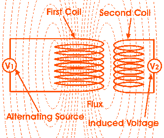

• Working Principle
Faraday's Laws of Electromagnetic Induction
Basic Theory of Transformer
• Main Constructional Parts
Definition of Transformer
Electrical power transformer is a static device which transforms electrical energy from one circuit to another without any direct electrical connection and with the help of mutual induction between two windings. It transforms power from one circuit to another without changing its frequency but may be in different voltage level.
This is a very short and simple definition of transformer, as we will go through this portion of tutorial related to electrical power transformer, we will understand more clearly and deeply "what is transformer ?" and basic theory of transformer.
Working Principle of Transformer
The working principle of transformer is very simple. It depends upon Faraday's law of electromagnetic induction. Actually, mutual induction between two or more winding is responsible for transformation action in an electrical transformer.
Faraday's Laws of Electromagnetic Induction
According to these Faraday's laws,
"Rate of change of flux linkage with respect to time is directly proportional to the induced EMF in a conductor or coil".
Basic Theory of Transformer
Say you have one winding which is supplied by an alternating electrical source. The alternating electric current through the winding produces a continually changing flux or alternating flux that surrounds the winding. If any other winding is brought nearer to the previous one, obviously some portion of this flux will link with the second. As this flux is continually changing in its amplitude and direction, there must be a change in flux linkage in the second winding or coil. According to Faraday's law of electromagnetic induction, there must be an EMF induced in the second. If the circuit of the later winding is closed, there must be an electric current flowing through it. This is the simplest form of electrical power transformer and this is the most basic of working principle of transformer.
For better understanding, we are trying to repeat the above explanation in a more brief way here. Whenever we apply alternating electric current to an electric coil, there will be an alternating flux surrounding that coil. Now if we bring another coil near the first one, there will be an alternating flux linkage with that second coil. As the flux is alternating, there will be obviously a rate of change in flux linkage with respect to time in the second coil. Naturally emf will be induced in it as per Faraday's law of electromagnetic induction. This is the most basic concept of the theory of transformer.
The winding which takes electrical power from the source, is generally known as primary winding of transformer. Here in our above example it is first winding.

The winding which gives the desired output voltage due to mutual induction in the transformer, is commonly known as secondary winding of transformer. Here in our example it is second winding.

The above mentioned form of transformer is theoretically possible but not practically, because in open air very tiny portion of the flux of the first winding will link with second; so the electric current that flows through the closed circuit of later, will be so small in amount that it will be difficult to measure.
The rate of change of flux linkage depends upon the amount of linked flux with the second winding. So, it is desired to be linked to almost all flux of primary winding to the secondary winding. This is effectively and efficiently done by placing one low reluctance path common to both of the winding. This low reluctance path is core of transformer, through which maximum number of flux produced by the primary is passed through and linked with the secondary winding. This is the most basic theory of transformer.
Main Constructional Parts of Transformer
The three main parts of a transformer are,
- Primary Winding of transformer - which produces magnetic flux when it is connected to electrical source.
- Magnetic Core of transformer - the magnetic flux produced by the primary winding, that will pass through this low reluctance path linked with secondary winding and create a closed magnetic circuit.
- Secondary Winding of transformer - the flux, produced by primary winding, passes through the core, will link with the secondary winding. This winding also wounds on the same core and gives the desired output of the transformer.
 by
by